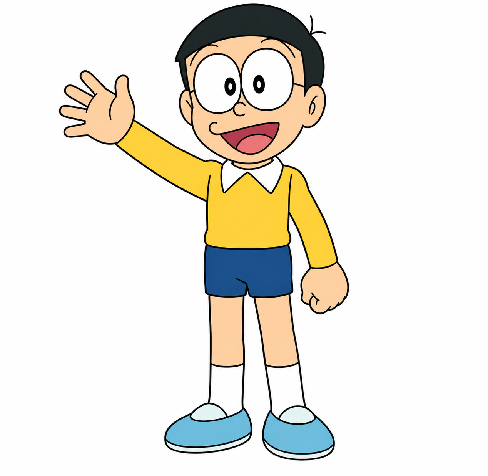
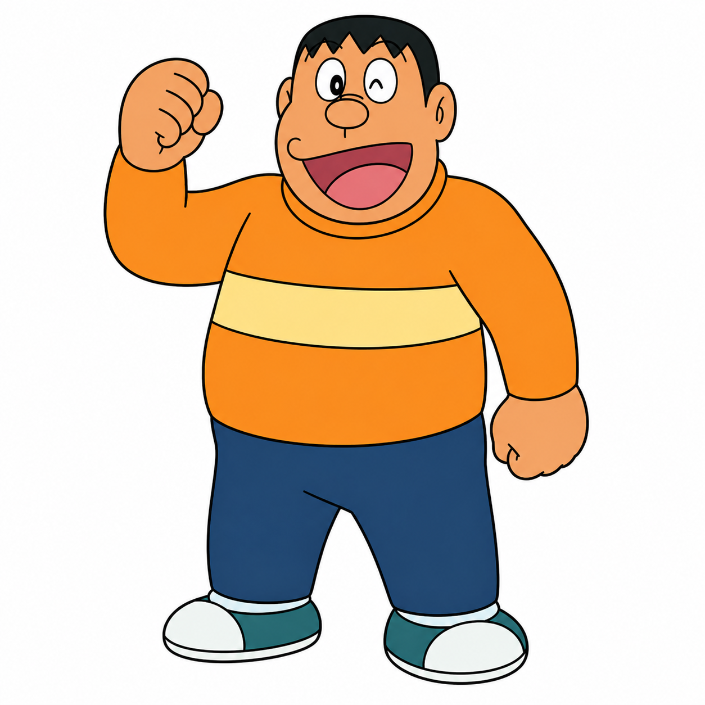
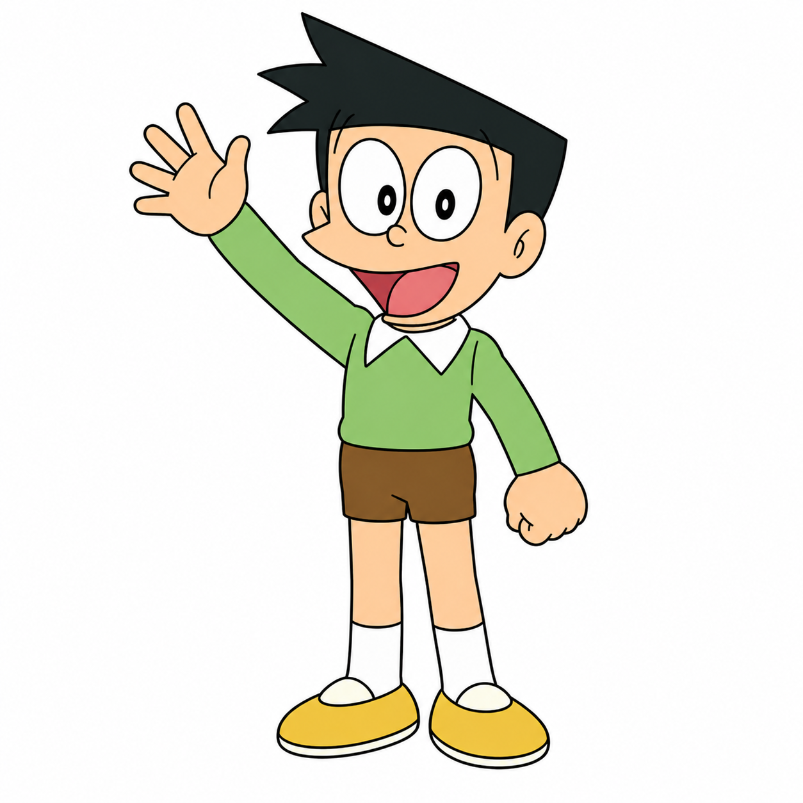

22nd
Century origin
Stories, gadgets, characters, and a Nobita adventure game — all in one interactive universe. Powered by love for the blue robot cat from the 22nd century.

Doraemon is a robotic cat from the 22nd century, sent to help Nobita Nobi navigate life using incredible gadgets from his four-dimensional pocket.
The Doraemon universe blends heartwarming comedy with meaningful life lessons. Every gadget comes with a twist — usually teaching responsibility, friendship, honesty, or self-reliance.
Each gadget has a purpose, a funny risk, and a valuable lesson attached to it.
Opens a route to almost any place. In the game it works as a teleport boost away from danger.
A small flying propeller. Helps Nobita soar above obstacles and collect comics mid-air.
Shrinks objects or people. In gameplay, Nobita becomes harder to hit by enemies.
Travels through time. In gameplay it slows down all enemies and obstacles around Nobita.

The loyal robotic cat who wants Nobita to become more responsible and self-sufficient.

Kind-hearted, emotional, lazy at times, but always capable of real growth when it matters.

Gentle, sincere, and often the moral compass of the group. Nobita's biggest inspiration.

Strong, loud, and intimidating — but fiercely protective of his friends when it counts.

Stylish, clever, and often used for comedy through boasting. Secretly admires Nobita.
The game features double jump, gadget power-ups with timers, combo multipliers, level progression, smoother controls, and a polished pause system with Doraemon's pocket.